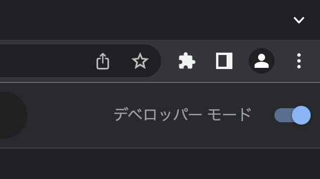
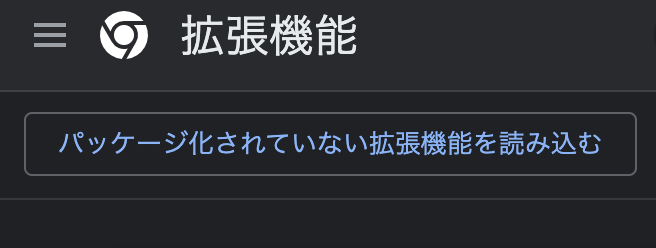
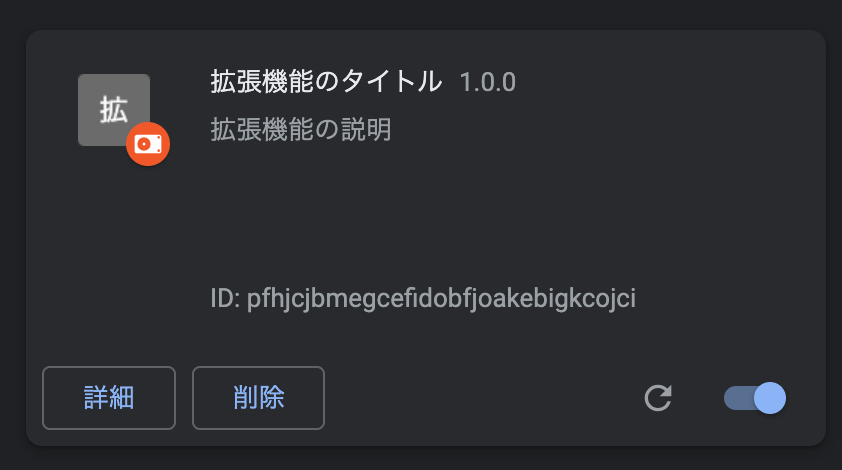
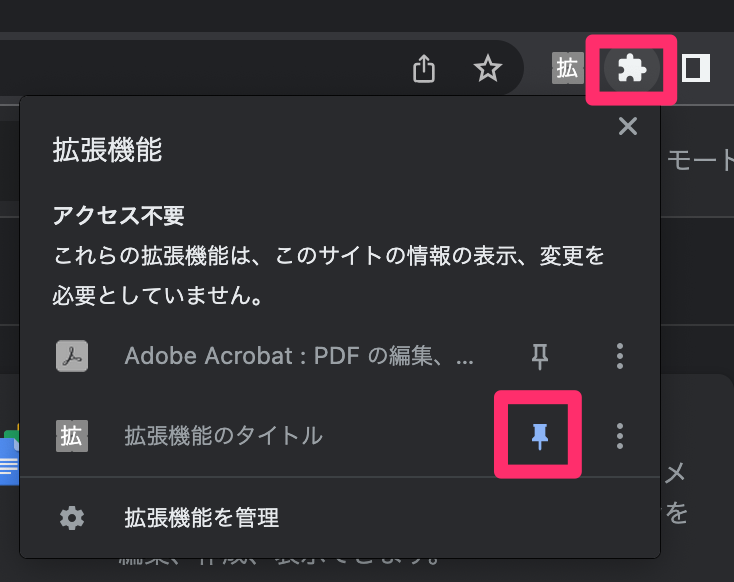

0. はじめに
0-1. 前回の課題
0-2. 今回の成果物
- Firebaseを組み込んだブックマークサイト
- 三択クイズ
{
"name": "拡張機能のタイトル",
"version": "1.0.0",
"manifest_version": 3
}



{
"name": "拡張機能のタイトル",
"description": "拡張機能の説明",
"version": "1.0.0",
"manifest_version": 3
}{
"name": "拡張機能のタイトル",
"description": "拡張機能の説明",
"version": "1.0.0",
"manifest_version": 3,
"icons": {
"16": "./images/icon16.png",
"48": "./images/icon48.png",
"128": "./images/icon128.png"
}
}<!DOCTYPE html>
<html lang="ja">
<head>
<meta charset="UTF-8">
<meta name="viewport" content="width=device-width, initial-scale=1.0">
<title>眠気を覚ます</title>
<link rel="stylesheet" href="https://unpkg.com/modern-css-reset/dist/reset.min.css">
<style>
.container {
width: 500px;
}
</style>
</head>
<body>
<div class="container">
<img src="https://www.amepla.jp/media/wp-content/uploads/2021/12/tsubo.jpg" alt="">
</div>
</body>
</html>{
"name": "眠気を覚ます",
"description": "眠気を覚ますツボを表示してくれます。",
"version": "1.0.0",
"manifest_version": 3,
"icons": {
"16": "./images/icon16.png",
"48": "./images/icon48.png",
"128": "./images/icon128.png"
},
"action": {
"default_popup": "popup.html"
}
}const img = document.querySelector('img');
img.addEventListener('click', () => {
alert('click!');
});<body>
<div class="container">
<img src="https://www.amepla.jp/media/wp-content/uploads/2021/12/tsubo.jpg" alt="">
</div>
<!-- js読み込み -->
<script src="./popup.js"></script>
</body>※インラインスクリプトで読み込むとエラーがでるので注意。（セキュリティのため）